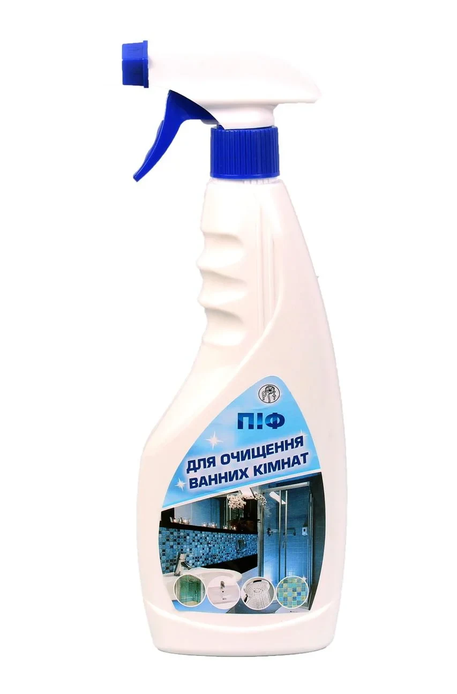
Кислотний очищувач для ванних кімнат, душових кабінок і кранів. Знімає вапняний та мильний наліт, іржу й побутовий бруд з акрилу, емалі, кераміки, хрому, нержавійки, пластику й скла.
Нанесіть на забруднену поверхню, потерти щіткою і змийте водою. Для стійкого нальоту чи плям іржі залиште на 5–10 хв, ще раз обробіть щіткою і змийте.
Склад: вода підготовлена >30%, ортофосфорна кислота, органічні кислоти 2–5%, ПАР <5%, віддушка, барвник <0,2%. Уникайте тривалого контакту з чутливими декоративними покриттями. Зберігайте недоступно для дітей.
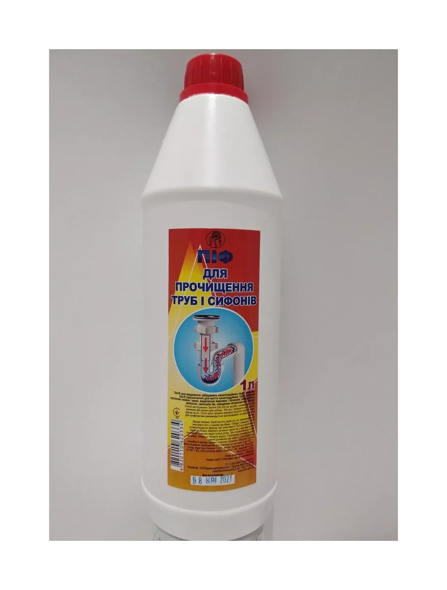
Лужний засіб для прочищення каналізаційних труб і сифонів кухонних мийок та ванн. Розчиняє жир, білкові відкладення, волосся й залишки їжі, зменшує неприємний запах.
Залийте 200–250 мл у злив раковини чи ванни (для унітазу — 500 мл) і залиште на 4 години, краще на ніч. Промийте великою кількістю гарячої води. Для профілактики — не рідше разу на місяць.
Містить їдкий луг: не змішуйте з іншими засобами, бережіть від нагріву. Зберігайте щільно закритим вертикально, недоступно для дітей. Працюйте в гумових рукавичках; при потраплянні на шкіру чи в очі — промийте водою.
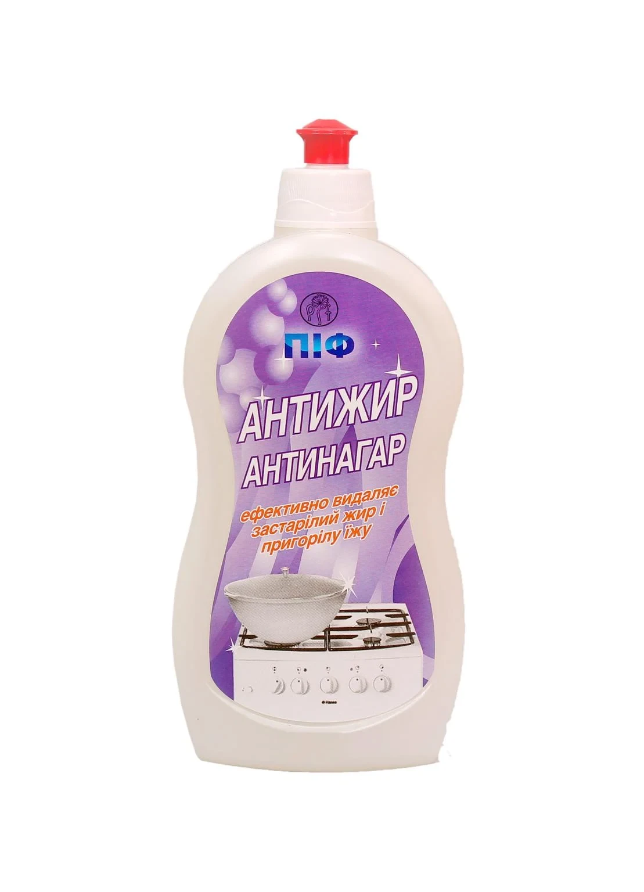
Спрей-антижир 500 мл для кухні: знімає застарілий жир, нагар і кіптяву з плит, духовок і робочих поверхонь (окрім чутливих матеріалів, див. безпеку).
Збовтайте пляшку, нанесіть на 5–10 хв. Сильні забруднення протріть губкою й змийте. Для фритюрниць: залийте гарячу воду вище рівня олії, додайте 100–200 мл на 1 л води, витримайте 1–2 год, злийте, почистіть щіткою й промийте.
Не використовуйте на алюмінії, емалі, склі та лакофарбових поверхнях. Обов’язково — гумові рукавички. Зберігайте щільно закритим, недоступно для дітей.
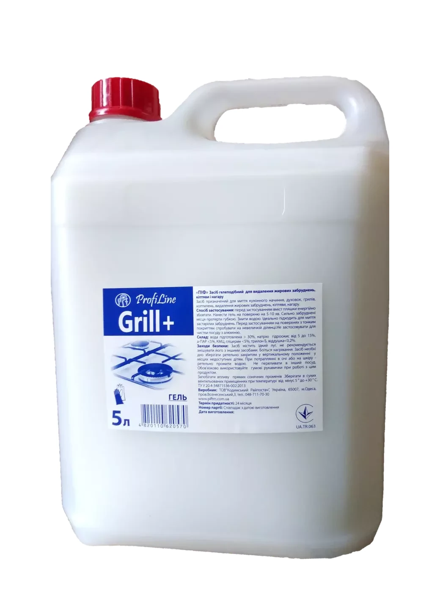
Концентрат антижир / антинагар у тарі 5 л для інтенсивного кухонного прибирання та закладів харчування. Та сама робоча формула, що й у побутовому фасуванні, зручна для великого обсягу робіт.
Перед використанням збовтайте. Нанесіть на поверхню на 5–10 хв, за потреби потріть губкою й змийте. Для фритюрниць розводьте 100–200 мл на 1 л гарячої води, витримайте 1–2 год, промийте.
Не для алюмінію, емалі, скла й лакофарбових покриттів. Працюйте в рукавичках. Велику тару тримайте закритою, вертикально, поза доступом дітей.
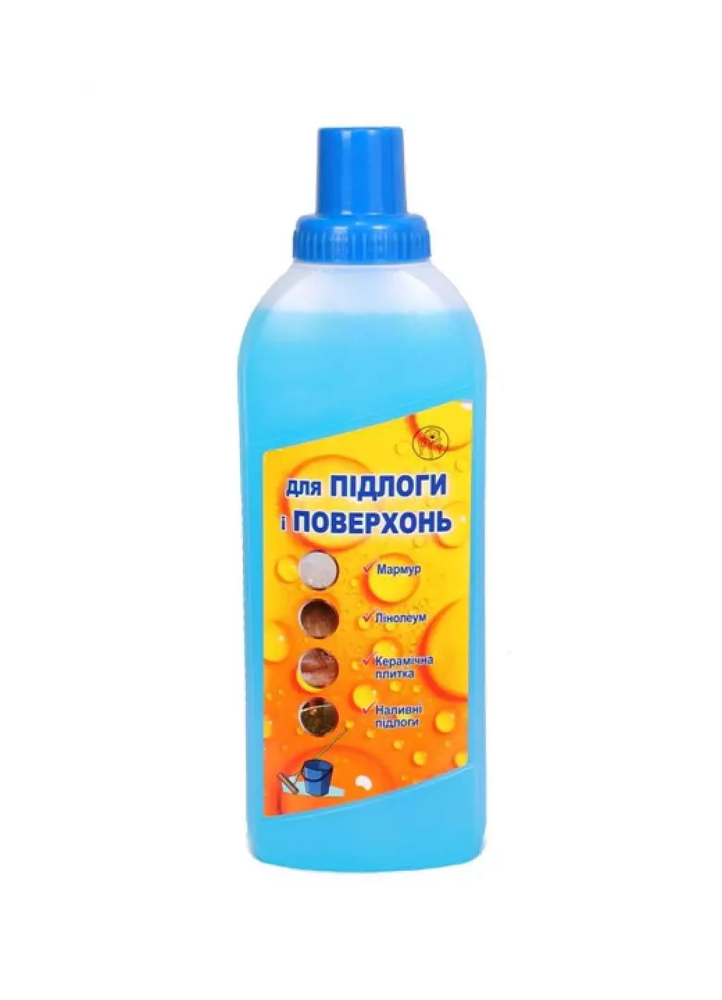
Мийний засіб 1 л для підлоги з лінолеуму, наливної підлоги, кераміки, мармуру та інших поверхонь — ручне миття або спецобладнання.
Розчиніть 50–100 мл у 5–6 л води. Вимийте поверхню губкою чи тканиною. На сильних забрудненнях можна нанести нерозбавленим, потерти й промити водою.
Замерзає; після розморожування властивості зберігаються. Тримайте в сухому вентильованому місці від −5 °C до +30 °C, без прямого сонця. Недоступно для дітей.
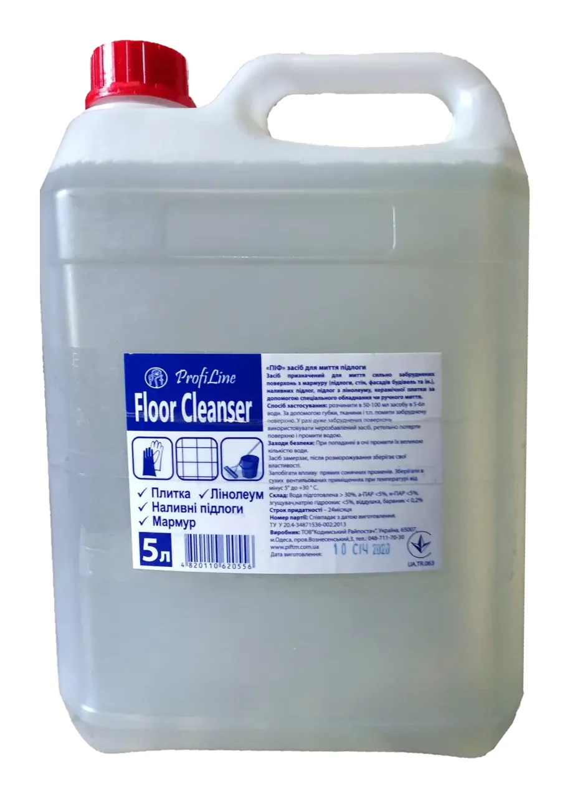
Мийний засіб для підлоги у фасуванні 5 л — для регулярного прибирання великих площ удома, в офісі чи на виробництві.
Робочий розчин: 50–100 мл на 5–6 л води. Мийте вручну або машиною. Локально на сильних плямах можна застосувати концентрат, потім змити.
Після заморожування/розморожування залишається робочим. Зберігайте від −5 °C до +30 °C у сухому приміщенні без прямих сонячних променів.
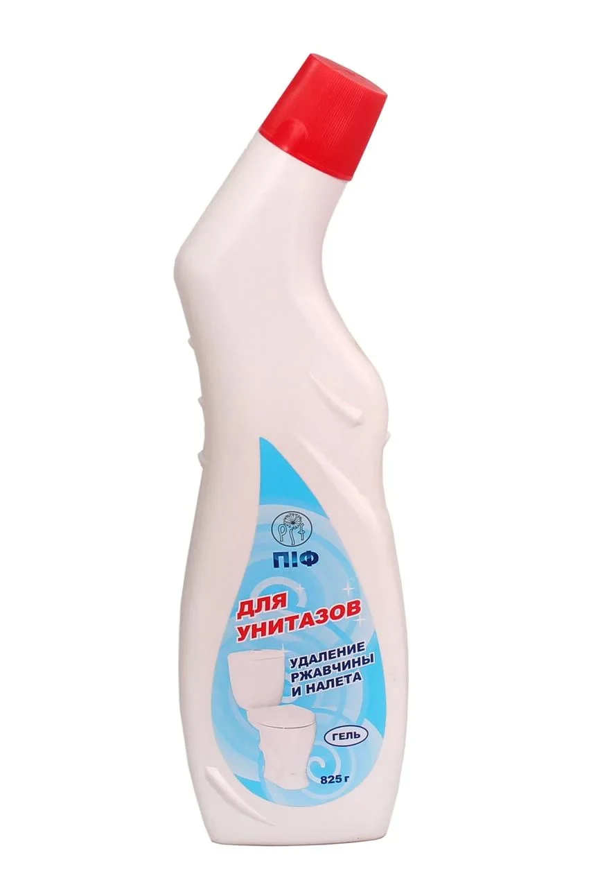
Гель 750 мл для унітазів, раковин, кахлю та кераміки. Швидко розчиняє вапняний наліт, сечовий камінь, іржу й складні забруднення під обідком унітазу.
Нанесіть на поверхню унітазу та під обідок, потерти щіткою, змийте. При сильних відкладеннях залиште на 5–15 хв, обробіть щіткою й змийте водою.
Уникайте потрапляння в очі. Після роботи проветріть приміщення. Зберігайте щільно закритим, недоступно для дітей.
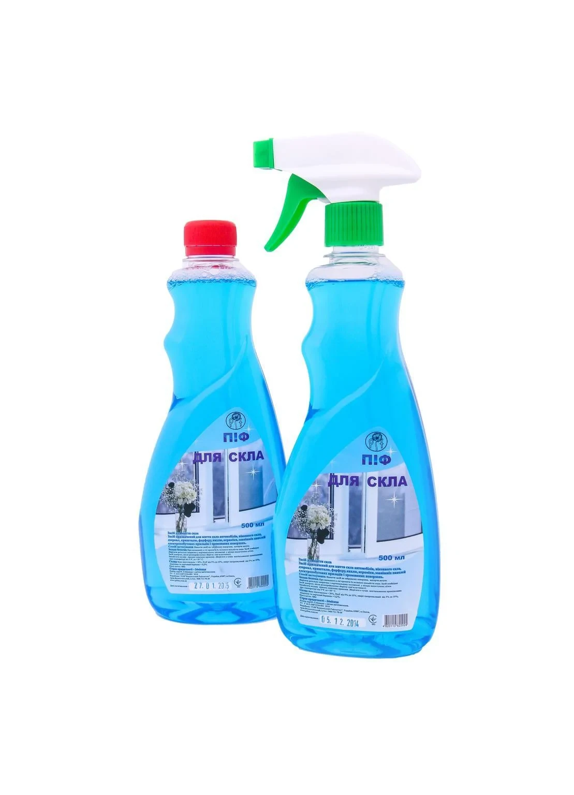
Засіб для миття скла вікон і авто, дзеркал, кришталю, фарфору, кахлю, кераміки, зовнішніх панелей електроприладів і хромованих поверхонь — без розводів при правильному витиранні.
Нанесіть на забруднену поверхню і витріть насухо чистою тканиною або серветкою.
Склад: вода >30%, ізопропіловий спирт до 10%, розчин аміаку 0,5–1%, ПАР, віддушка, барвник до 0,2%. Зберігайте при 0–30 °C у сухому місці; замерзає, після розморожування придатний. Уникайте прямого сонця.
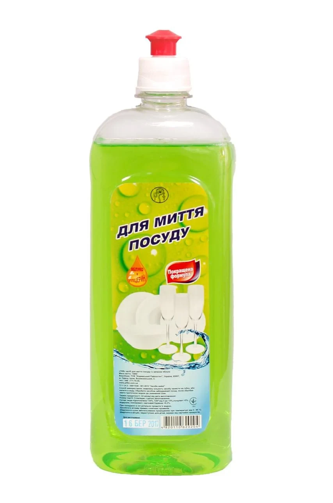
Засіб для ручного миття посуду 500 мл з ароматом яблука. Добре піниться, знімає жир і залишки їжі, легко змивається — для щоденного домашнього використання.
Нанесіть на вологу губку або розчиніть у воді, вимийте посуд і ретельно промийте чистою водою.
Лише для зовнішнього миття посуду. Уникайте потрапляння в очі. Зберігайте недоступно для дітей, щільно закритим.
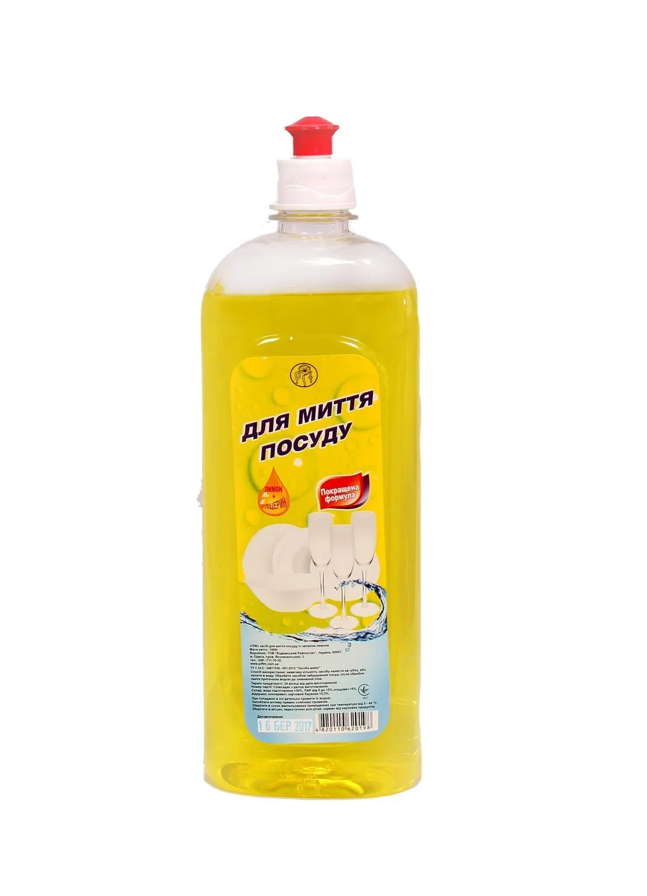
Засіб для ручного миття посуду 500 мл з ароматом лимона. Розчиняє жир, освіжає, підходить для тарілок, каструль і кухонного приладдя.
Нанесіть на вологу губку або розведіть у воді, вимийте посуд і змийте чистою водою.
Уникайте контакту з очима. При потраплянні — промийте водою. Зберігайте закритим і недоступним для дітей.
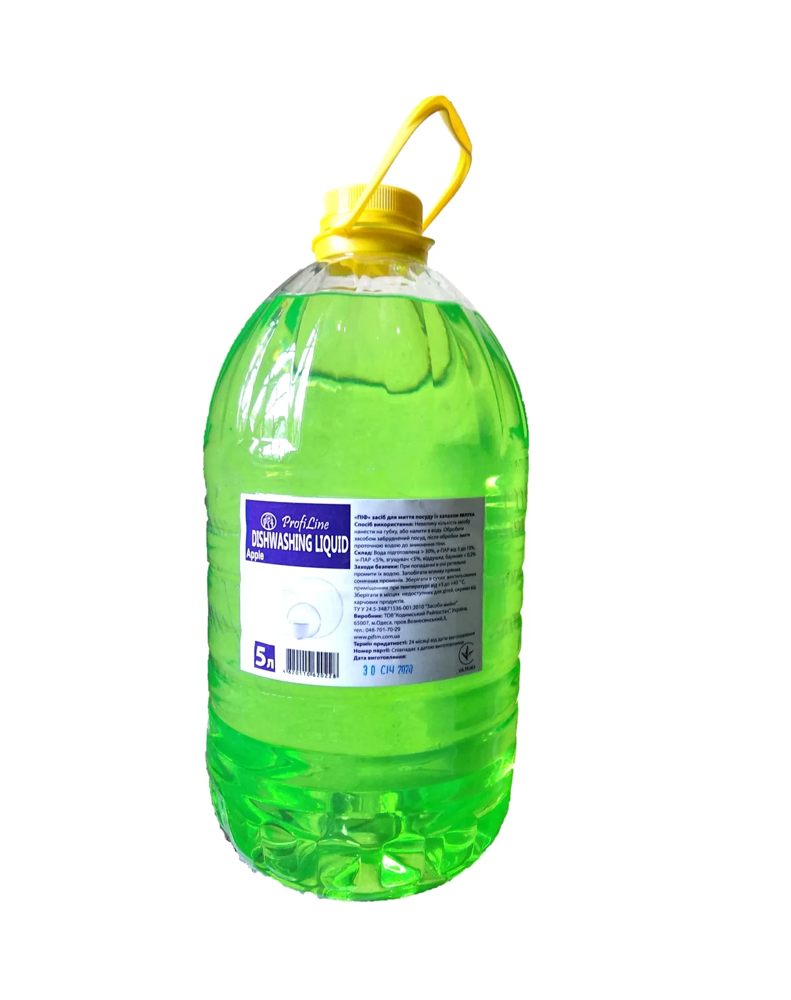
Концентрований засіб для миття посуду з запахом яблука у тарі 5 л — економна витрата для HoReCa та інтенсивного домашнього використання.
Невелику кількість розчиніть у воді або нанесіть на губку. Після миття ретельно промийте посуд.
Концентрат: не ковтайте, бережіть очі. Зберігайте щільно закритим у вертикальному положенні, недоступно для дітей.
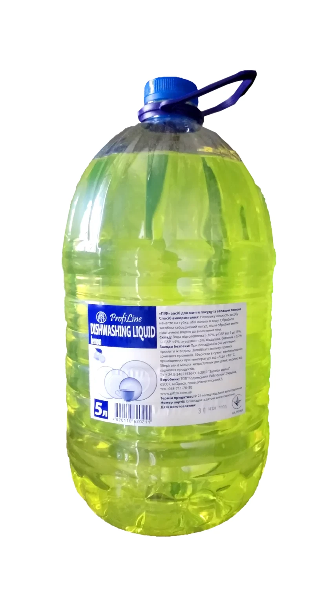
Концентрований мийний для посуду з лимоном, 5 л. Справляється з жирними забрудненнями в професійному й домашньому режимі.
Розчиніть у воді або нанесіть на губку, вимийте посуд і промийте. Дозуйте економно — концентрат піниться активно.
Тримайте тару щільно закритою. Уникайте потрапляння в очі та всередину. Недоступно для дітей.
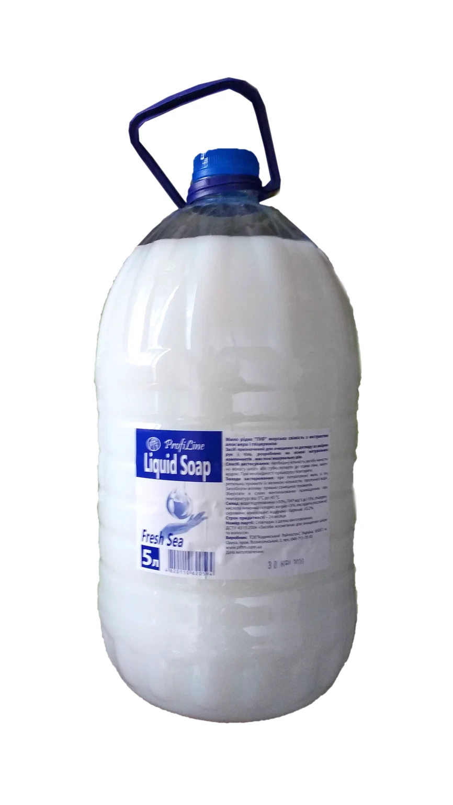
Рідке мило «Морська свіжість» 5 л для дозаторів і частого миття рук удома чи на роботі. Свіжий аромат, підходить для щоденного використання.
Нанесіть невелику кількість на вологі руки, спініть і змийте водою. Сумісний зі стандартними дозаторами.
Для зовнішнього застосування. Уникайте контакту з очима. Зберігайте закритим, недоступно для дітей.
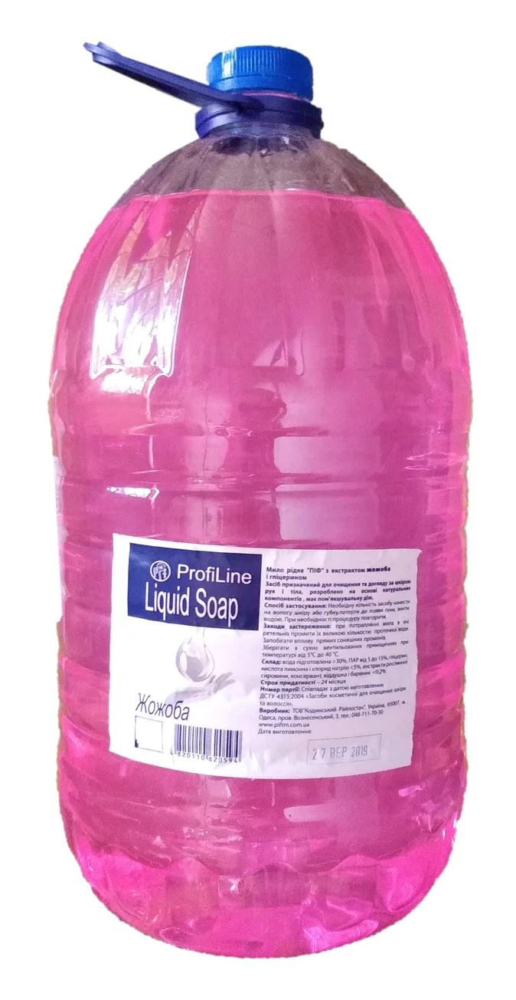
Рідке мило з екстрактом жожоба, 5 л. М’яко очищує руки й зменшує відчуття сухості після частого миття, з приємним ароматом.
Нанесіть на вологі руки, спініть і ретельно змийте водою. Зручно для дозаторів у санвузлах і на виробництві.
Тільки для зовнішнього застосування. При подразненні припиніть використання. Зберігайте недоступно для дітей.
У цій категорії поки немає позицій у каталозі. Напишіть нам щодо оптового асортименту.